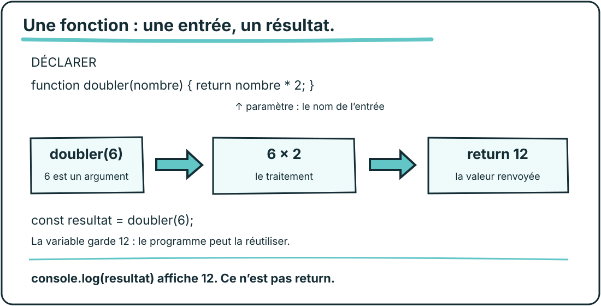

À garder après la séance
Je déclare. J’appelle. Je réutilise.

function additionner(a, b) {
return a + b;
}
const total = additionner(2, 3);
console.log(total);a et b : paramètres. 2 et 3 : arguments. 5 : résultat renvoyé, puis stocké dans total.
Déclarer ne lance pas la fonction. Afficher ne remplace pas renvoyer.
EDEN School · Fonctions & logique1 / 2